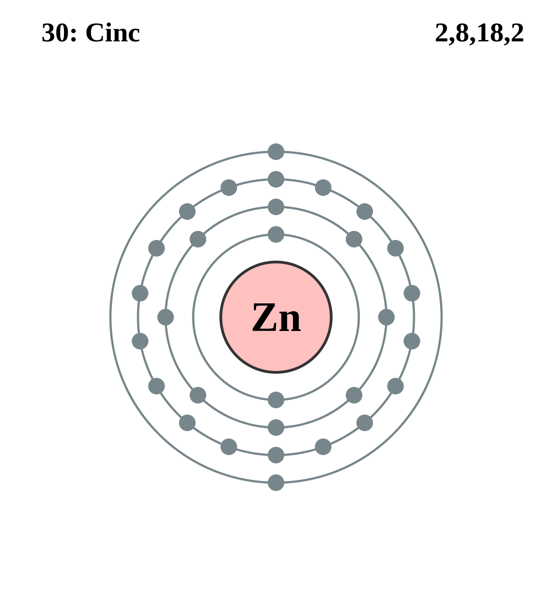

|
|
||
|
ZINC Antes de identificarse como elemento, el cinc se utilizaba para fabricar latón. El metal se redescubrió en Europa en 1746. El cinc es un metal lustroso de color blanco azulado, frágil a temperatura ambiente y, cuando se superan los 100 °C, se hace maleable y presenta superplasticidad. Es un buen conductor de electricidad y se enciende en contacto con el aire a altas temperaturas. |
 |
DATOS Número Atómico: 30 Peso Atómico: 65.38 Electronegatividad: 1.65 Configuración Electrónica: [Ar]3d²4s² Estados de Oxidación: +2 No. de Electrones de Valencia: 2 |